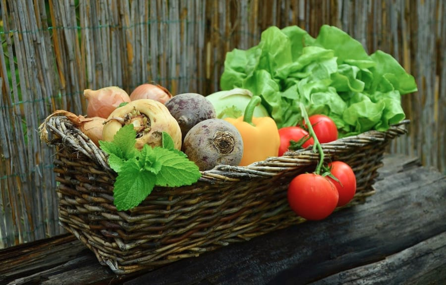
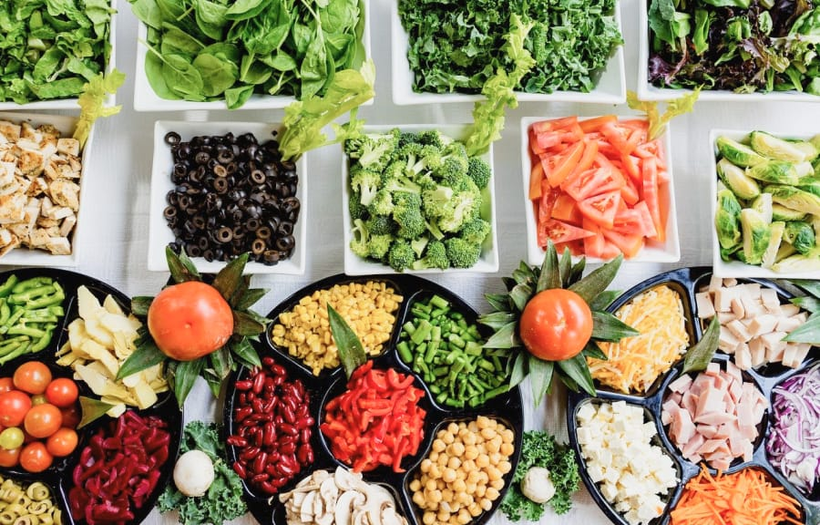
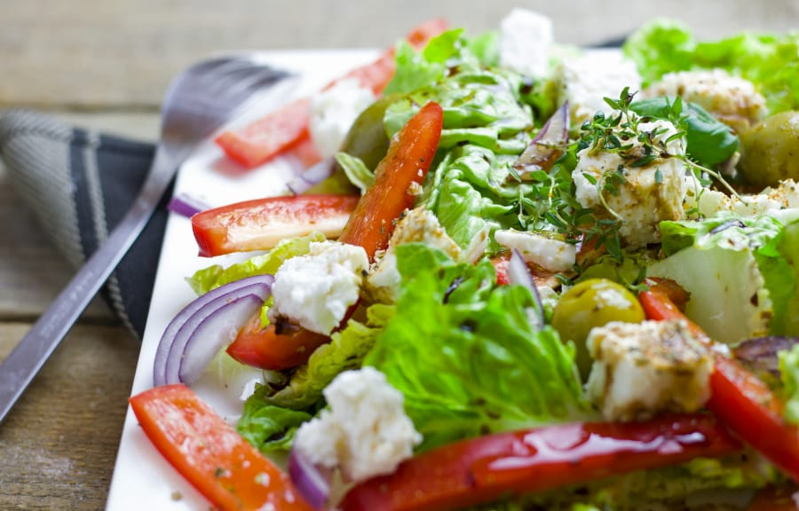

Garden Saladのこだわり About
-
全ての食材が安心の国産
TF Garden Saladaの食材は全て産地を公表をしています。信頼できる農家さんから直接買い取り、その日採れたものをその日のうちに厨房へ。
01 -
カスタム可能で
その組み合わせは全400種類！定番のメニューに加えてサラダのフルカスタムも可能。お好みのベース×トッピング×ドレッシングを選んであなた好みにアレンジして。
02 -
ジムトレーナー監修の
メニューコンビニのサラダチキンに飽きたらこれ！一食でタンパク質20gがとれるトレーニング向けのメニューもご用意してます。
03
店舗情報 Shop
TF Garden Salad （ガーデンサラダ）
〒150-0000
東京都渋谷区表参道 10-20-20
Tel. 090-1234-8899
- 営業時間
- 11：00 - 20：00
- 定休日
- 日曜
- アクセス
-
東京メトロ千代田線「明治神宮前駅」
5番出口から徒歩5分JR「原宿駅」東口から徒歩10分